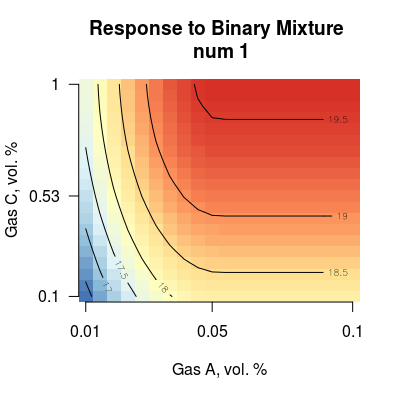
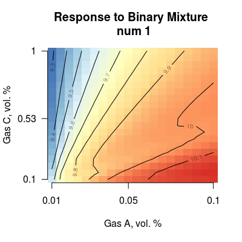
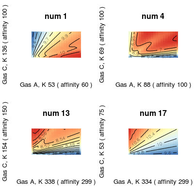
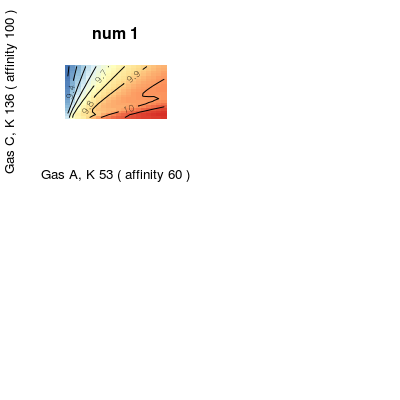
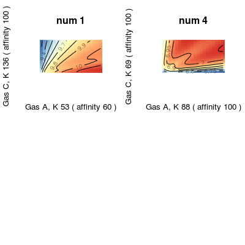
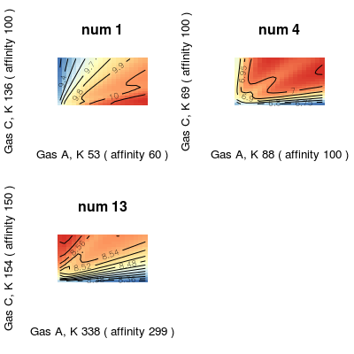

Demo BinaryMixtures.



for(num in c(1, 4, 13, 17)) { s <- Sensor(num=num, gases=c(1, 3)) Ka <- round(affinity(s), 0) K <- round(coef(s, 'SorptionModel'), 0) plotMixture(s, axes=FALSE, xlab = paste("Gas A, K", K[1], "( affinity", Ka[1], ")"), ylab = paste("Gas C, K", K[2], "( affinity", Ka[2], ")"), main=paste("num", num)) }

